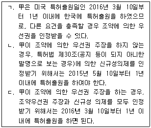
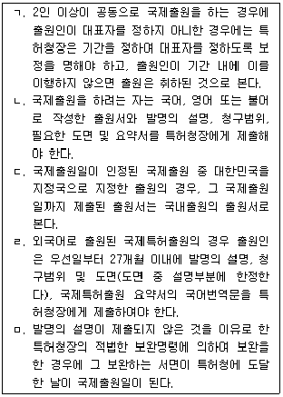
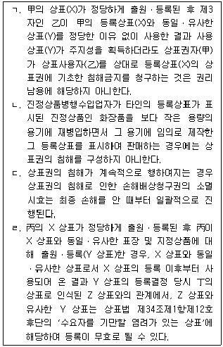
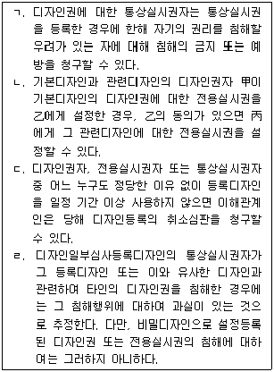

변리사-1차(1교시) (2017-02-25 기출문제)
1. 연구원 甲은 유전자에 관한 발명을 하여 2015년 5월 10일 미국에서 논문으로 발표를 하였다. 甲은 상업적 성공에 확신을 갖게 되어 2016년 3월 10일 미국 특허상표청에 특허출원을 하였다. 그 후 甲은 자신의 미국 특허출원에 근거하여 조약우선권을 주장하면서 2017년 2월 10일 한국 특허청에 특허출원을 하였다. 이에 관한 설명으로 옳은 것을 모두 고른 것은? (모든 일자는 공휴일이 아닌 것으로 함)

- ㄱ
- ㄱ, ㄴ
- ㄱ, ㄷ
- ㄱ, ㄴ, ㄷ
- ㄴ, ㄷ
(정답률: 알수없음)

2. 설정등록된 특허권의 정정심판에 관한 설명으로 옳지 않은 것은? (다툼이 있으면 판례에 따름)
- 특허권자는 특허의 무효심판 또는 정정의 무효심판이 특허심판원에 계속되고 있는 경우에는 정정심판을 청구할 수 없다.
- 정정심판에서 잘못 기재된 사항을 정정하는 경우, 보정이 인정된 특허발명의 명세서 또는 도면의 범위 내에서 할 수 있다.
- 정정심판에서 청구범위를 감축하는 경우, 정정 후의 청구범위에 적혀 있는 사항이 특허출원을 하였을 때 특허를 받을 수 있는 것이어야 한다.
- 특허된 후 그 특허권자가 특허법 제25조(외국인의 권리능력)에 따라 특허권을 누릴 수 없는 자로 되어 무효심판에 의해 특허권을 무효로 한다는 심결이 확정된 경우에는 정정심판을 청구할 수 있다.
- 정정 후의 특허청구범위에 의하더라도 발명의 목적이나 효과에 어떠한 변경이 없고 발명의 설명 및 도면에 기재되어 있는 내용을 그대로 반영한 것이어서 정정 전의 특허청구범위를 신뢰한 제3자에게 예기치 못한 손해를 줄 염려가 없다면, 그 정정 청구는 특허청구범위를 실질적으로 확장하거나 변경하는 경우에 해당되지 아니한다.
(정답률: 알수없음)
3. 특허법 제107조(통상실시권 설정의 재정)에 관한 설명으로 옳지 않은 것은?
- 특허발명을 실시하려는 자는 그 특허발명이 천재 지변이나 그 밖의 불가항력이 아닌 사유로 계속하여 3년 이상 국내에서 실시되고 있지 아니하고 특허권자, 전용실시권자 또는 통상실시권자와 합리적인 조건으로 협의하였으나 합의가 이루어 지지 아니한 경우, 특허청장에게 재정을 청구할 수 있다.
- 특허출원일로부터 4년이 지나지 아니한 특허발명에 관하여는, 대통령령으로 정하는 정당한 이유 없이 계속하여 3년 이상 국내에서 실시되고 있지 않다는 것을 근거로 재정을 청구할 수 없다.
- 특허발명의 실시가 공공의 이익을 위하여 특히 필요하여 하는 재정의 경우, 통상실시권은 국내수요충족을 위한 공급을 주목적으로 하여야 한다.
- 반도체 기술에 대해서는, 공공의 이익을 위하여 비상업적으로 실시하려는 경우와, 사법적 절차 또는 행정적 절차에 의하여 불공정거래행위로 판정된 사항을 바로잡기 위하여 특허발명을 실시할 필요가 있는 경우에만 재정을 청구할 수 있다.
- 특허발명을 실시하려는 자는 공공의 이익을 위하여 특허발명을 비상업적으로 실시하려는 경우와 사법적 절차 또는 행정적 절차에 의하여 불공정거래행위로 판정된 사항을 바로잡기 위하여 특허발명을 실시할 필요가 있는 경우, 특허권자 또는 전용실시권자와 협의 없이도 재정을 청구할 수 있다.
(정답률: 알수없음)
4. 특허 심결취소소송에 관한 설명으로 옳지 않은 것은? (다툼이 있으면 판례에 따름)
- 특허법원의 기술심리관은 재판의 주체는 아니지만 심리에는 참여하는 주체이므로 제척ㆍ기피의 대상이 된다.
- 적극적 권리범위 확인심판에서 피청구인이 확인대상발명의 불실시를 주장하지 아니한 결과 청구가 인용된 경우에도 그 심결취소소송에서 비로소 확인대상발명의 불실시를 이유로 심판청구에 위법이 있었음을 주장ㆍ입증할 수 있다.
- 통지된 거절이유가 비교대상발명에 의하여 출원발명의 진보성이 부정된 경우, 위 비교대상발명을 보충하여 특허출원 당시 그 기술분야의 주지ㆍ관용기술이라는 점을 증명하기 위한 자료는 이미 통지된 거절이유와 주요한 취지가 부합하지 아니하는 새로운 거절이유이므로 특허청장은 거절결정불복심판청구 기각 심결의 취소소송절차에서 거절이유로 주장할 수 없다.
- 심결의 위법을 들어 그 취소를 청구할 때에는 그 취소를 구하는 자가 위법사유에 해당하는 구체적 사실을 먼저 주장하여야 하고, 법원은 당사자가 주장한 법률요건에 관한 사항과 직권조사사항에 한하여 판단하여야 한다.
- 거절결정불복심판청구 기각 심결의 취소소송절차에서 거절결정의 이유 외에도 심사나 심판 단계에서 의견서 제출의 기회를 부여한 사유에 대해 심결취소소송의 법원은 이를 심리ㆍ판단하여 심결의 당부를 판단하는 근거로 삼을 수 있다.
(정답률: 알수없음)
5. 특허출원에 관한 설명으로 옳지 않은 것은? (다툼이 있으면 판례에 따름)
- 甲이 2016년 1월 5일 특허청구범위에 a, 발명의 설명에 a와 b가 기재된 특허출원 A를 하고, 乙이 2016년 6월 1일 특허청구범위에 b, 발명의 설명에 b가 기재된 특허출원 B를 한 뒤, 특허출원 A가 2016년 10월 1일 공개되었다가 甲이 2016년 12월 1일 보정을 통해 발명의 설명에서 b를 삭제한 경우에, 乙은 특허받을 수 없다.
- 확대된 선출원이 적용되려면 두 발명의 기술적 구성이 동일해야 하는바, 두 발명 사이에 구성상 차이가 있어 새로운 효과가 발생한 경우, 그 구성상 차이가 그 발명이 속하는 기술분야에서 통상의 기술자가 용이하게 도출할 수 있는 범위 내라고 하더라도 확대된 선출원의 규정은 적용되지 않는다.
- 서로 다른 사람이 출원한 선출원과 후출원의 청구범위에 기재된 발명의 구성에 차이가 있어도, 그 기술분야에 통상의 지식을 가진 자가 보통으로 채용하는 정도의 변경에 지나지 않고 발명의 목적과 작용효과에 특별한 차이를 일으키지 않는다면, 후출원은 특허받을 수 없다.
- 서로 다른 사람이 같은 날에 청구범위에 기재된 발명의 구성이 동일한 특허출원을 한 경우에는, 출원인 간에 협의하여 정한 하나의 출원인만이 특허를 받을 수 있다.
- 甲이 발명 A에 대하여 같은 날 특허출원과 실용신안등록출원을 하여 모두 등록되었더라도 A에 대한 특허등록 무효심판이 제기되기 전에 실용신안등록을 포기하였다면, A에 대한 특허등록은 유효하다.
(정답률: 알수없음)
6. 甲, 乙은 발명 A의 공동발명자, 丙, 丁은 제3자이다. 이에 관한 설명으로 옳은 것은?
- 발명 A의 출원 전이라면, 甲은 乙의 동의 없이도 발명 A에 관하여 자신의 특허를 받을 수 있는 권리를 丙에게 양도할 수 있다.
- 甲과 乙이 공동으로 발명 A를 출원하여 특허등록을 받은 경우, 甲은 乙의 동의 없이는 발명 A를 스스로 실시할 수 없다.
- 甲과 乙이 공동으로 출원하여 특허등록을 받은 경우, 甲은 乙의 동의 없이 丙에게 전용실시권은 설정할 수 없으나 통상실시권은 허락할 수 있다.
- 丙이 甲과 乙로부터 발명 A에 대한 권리 일체를 양수하여 자신의 이름으로 특허출원하면서 자신을 발명자라고 표시하여 등록되었다면, 이는 등록무효사유에 해당한다.
- 丙이 甲과 乙로부터 발명 A에 대한 권리 일체를 양수한 후 그 출원을 하기 전에, 그러한 사정을 모르는 丁이 甲과 乙로부터 발명 A에 대한 특허를 받을 수 있는 권리를 이중으로 양수하여 자신의 이름으로 출원한 경우, 丁의 출원은 적법하다.
(정답률: 알수없음)
7. 특허권에 관한 설명으로 옳지 않은 것은? (다툼이 있으면 판례에 따름)
- 甲이 구성요소 a+b로 이루어진 특허발명 A의 특허권자인 상태에서, 乙이 구성 a+b'(구성 b의 균등물)+c로 이루어진 개량발명 B에 대해 특허를 받았다면, 특허발명 A와 개량발명 B 사이에는 이용관계가 성립한다.
- 동일한 발명 A에 대하여 甲과 乙이 각각 특허를 받았고 甲이 선출원하여 선등록된 상태라면, 乙이 A 발명을 실시하기 위해서는 특허법 제98조(타인의 특허발명 등과의 관계)에 따라 甲의 허락을 받아야 한다.
- 甲이 물건발명 A(구성요소 a+b)의 특허권자이고, 乙이 그 물건을 생산하는 장치발명 B(구성요소 x+y+z)의 특허권자인 경우, B를 실시(사용)하게 되면 A의 실시(생산)가 불가피하게 수반되지만, 그렇다고 하여 B가 A와 이용관계에 있는 것은 아니다.
- 후출원 특허권자가 특허법 제138조(통상실시권 허락의 심판)의 통상실시권 허락을 받기 위해서는, 후출원 특허발명이 선출원 특허발명에 비해 상당한 경제적 가치가 있는 중요한 기술적 진보가 있어야 한다.
- 甲이 발명 A의 특허권자이고 乙이 발명 A와 이용관계에 있는 발명 B의 특허권자라면, 甲은 乙을 상대로 발명 B가 발명 A의 권리범위에 속한다는 적극적 권리범위 확인심판을 청구할 수 있다.
(정답률: 알수없음)
8. 특허에 관한 설명으로 옳지 않은 것은? (다툼이 있으면 판례에 따름)
- 선택발명에 있어서 선행발명을 기재한 선행문헌에 선택발명에 대한 문언적인 기재가 존재하는 경우 외에도, 그 발명이 속하는 기술분야에서 통상의 지식을 가진 자가 선행문헌의 기재 내용과 출원시의 기술 상식에 기초하여 선행문헌으로부터 직접적으로 선택발명의 존재를 인식할 수 있다면 그 선택발명의 신규성은 부정된다.
- 특허법 제32조(특허를 받을 수 없는 발명)의 공중의 위생을 해칠 우려가 있는 발명인지는 관련 행정법상 필요한 허가를 취득하였는지 여부와는 독립적이므로, 특허심사절차에서 별개로 판단 받아야 한다.
- 정부는 국방상 필요한 경우 외국에 특허출원하는 것을 금지하거나 발명자ㆍ출원인 및 대리인에게 그 특허출원의 발명을 비밀로 취급하도록 명할 수 있지만, 정부의 허가를 받은 경우에는 외국에 특허출원을 할 수 있다.
- 특허권의 적극적 권리범위 확인심판에서, 확인대상발명의 실시와 관련된 특정한 물건과의 관계에서 그 물건에 대한 특허권이 소진되었다면 확인대상발명에 대하여 권리범위 확인심판을 제기할 확인의 이익이 없다.
- 방법발명의 특허권자는 제3자가 그 방법의 실시에만 사용하는 물건을 생산, 판매하는 경우 그 방법의 실시에만 사용하는 물건과 대비되는 물건을 심판청구의 대상이 되는 발명으로 특정하여 특허권의 보호범위에 속하는지 여부의 확인을 구할 수 있다.
(정답률: 알수없음)
9. 통상실시권에 관한 설명으로 옳은 것은? (다툼이 있으면 판례에 따름)
- 특허법 제138조(통상실시권 허락의 심판)에 따라 통상실시권이 설정된 경우, 그 통상실시권이 설정된 특허권에 기한 사업이 계속되고 있는 이상 그 특허권이 소멸하더라도 이미 발생한 통상실시권의 존속에는 영향이 없다.
- 특허법 제138조(통상실시권 허락의 심판)에 따라 통상실시권이 설정된 경우, 그 통상실시권이 설정된 특허권자는 사업의 계속을 위해 통상실시권을 유보한 채 특허권만 이전할 수 있다.
- 乙이 발명 A를 사업상 실시하기 위해 특허권자 甲으로부터 통상실시권을 설정 받았다면, 乙이 丙에게 그 실시사업을 양도하는 경우에는 甲의 동의 없이도 위 통상실시권을 함께 양도할 수 있다.
- 특허법 제107조(통상실시권 설정의 재정)에 따른 통상실시권은 특허권자의 동의가 있는 경우에 이전할 수 있다.
- 특허법은 선사용에 의한 통상실시권에 대하여 특허출원한 발명자 甲으로부터 알게 되어 국내에서 그 발명의 실시사업을 하거나 이를 준비하고 있는 乙은 그 실시하거나 준비하고 있는 발명 및 사업목적의 범위에서 그 특허출원된 발명의 특허권에 대하여 통상실시권을 가지도록 명시하고 있다.
(정답률: 알수없음)
10. 특허권 침해 구제에 관한 설명으로 옳지 않은 것은? (다툼이 있으면 판례에 따름)
- 특허법은 물건발명에 대한 전용실시권자가 자기의 권리를 침해한 자 또는 침해할 우려가 있는 자에 대하여 그 침해행위를 조성한 물건의 반환을 청구할 수 있음을 명시하지 않는다.
- 물건 A에 대한 특허권의 전용실시권자 甲은 乙이 아무런 과실 없이 자신의 전용실시권을 침해하는 행위를 하였더라도 乙을 상대로 A를 제조하는데 제공된 기계의 제거를 청구할 수 있다.
- 특허권자 甲이 침해자 乙을 상대로 특허법 제128조(손해배상청구권 등)제4항에 따라 乙의 침해로 인한 이익액을 甲자신의 손해액으로 삼는 경우, 손해의 발생과 관련해서는 경업관계 등으로 인하여 손해 발생의 염려 내지 개연성이 있음을 주장ㆍ입증하는 것으로 족하다.
- 특허법 제128조(손해배상청구권 등)제5항에 따라 통상실시료 상당의 손해배상을 명할 때, 특허법은 법원으로 하여금 특허침해한 자에게 고의 또는 중대한 과실이 없다고 인정할 경우 통상실시료 상당의 손해배상액을 산정함에 있어 고의 또는 중과실이 없다는 사실을 고려할 수 있도록 명시하고 있다.
- 물건을 생산하는 방법의 발명에 관하여 특허가 된 경우에 그 물건과 동일한 물건은 그 특허된 방법에 의하여 생산된 것으로 추정하지만, 그 물건이 특허출원 전에 국내에서 공지되었다면 그런 추정은 적용되지 않는다.
(정답률: 알수없음)
11. 특허쟁송에 관한 설명으로 옳지 않은 것은? (다툼이 있으면 판례에 따름)
- 특허심판원 심결 후에는 그 심결의 흠이 있어도 오기나 기타 유사한 잘못임이 명백한 경우를 바로 잡는 것 외에 특허심판원 스스로도 이를 취소, 철회 또는 변경하는 것은 허용되지 않는바, 이를 일사부재리라 한다.
- 특허발명 X에 대하여 정정심판 사건이 특허심판원에 계속 중인 경우, 상고심에 계속 중인 특허발명 X에 관한 특허무효심결에 대한 취소소송의 심리를 중단하여야 하는 것은 아니다.
- 동일한 특허권에 관하여 甲과 乙이 각각 등록무효심판 청구를 하려는 경우, 甲, 乙은 공동으로 심판청구를 할 수 있으며, 공동심판 청구 후 甲에게 심판중지의 원인이 있으면 乙에 대해서도 그 효력이 발생한다.
- 행정소송인 심결취소소송에서도 원칙적으로 변론주의가 적용되지만 사실에 대한 법적 평가에 대하여 자백할 수 없다.
- 특허권의 공유자가 다른 공유자들을 상대로 공유특허권에 대한 공유물분할청구의 소를 제기할 수 있으나, 특허권의 현물분할은 허용되지 않는다.
(정답률: 알수없음)
12. 국제출원에 관한 설명으로 옳지 않은 것을 모두 고른 것은?

- ㄱ, ㄴ, ㄷ
- ㄱ, ㄴ, ㄹ
- ㄱ, ㄴ, ㅁ
- ㄴ, ㄷ, ㄹ
- ㄷ, ㄹ, ㅁ
(정답률: 알수없음)
13. 발명 및 발명의 출원에 관한 설명으로 옳은 것은? (다툼이 있으면 판례에 따름)
- 식물발명의 경우 종자, 세포 등을 특허청장이 지정하는 기탁기관 또는 국제기탁기관에 기탁할 수 있으나 결과물인 식물을 기탁함으로써 명세서의 기재를 보충할 수는 없다.
- 인터넷 비즈니스모델 특허의 경우에 매체에 저장된 애플리케이션 형태로 청구항을 작성할 수 있으나 그 청구범위에 수학적 알고리즘이 구성으로 포함되어 있으면 등록받을 수 없다.
- 국내에는 존재하지 않고 국외에만 존재하는 미생물에 관한 발명인 경우에는 통상의 기술자가 이를 쉽게 입수할 수 없는 것으로 간주되어 출원 전에 기탁을 하여야 한다.
- 미생물에 관한 특허발명의 출원시에는 제출된 명세서에 해당 미생물의 수탁번호를 기재하고 명세서 등 발명에 대한 설명의 기재만으로도 미생물의 구체적인 내용을 명확하게 파악할 수 있는 경우에는 기탁사실을 증명하는 별도의 서류는 요하지 않는다.
- 의약의 용도발명에 있어서 의약의 용도가 구성요소에 해당하므로 청구범위에는 의약용도를 치료 대상 질병 또는 약효로 명확하게 기재해야 하는 것인 바, 통상의 기술자의 기술상식에 비추어 약리기전만으로 구체적인 의약으로서의 용도를 명확하게 파악할 수 있다고 하더라도 이것만으로는 청구범위가 명확히 기재된 것이 아니어서 특허법 제42조(특허출원)제4항제2호의 요건을 충족한 것이라고 볼 수 없다.
(정답률: 알수없음)
14. 특허법상 보정에 관한 설명으로 옳지 않은 것은?
- 최초거절이유통지에 따른 의견서 제출기간 내에 한 보정에 의해 최초거절이유는 극복되었으나 심사관이 그 보정에 의한 새로운 거절이유를 발견한 경우에는 최후 거절이유통지를 한다.
- 기재불비를 이유로 최초거절이유통지를 받아 기재불비를 해소하는 보정을 한 출원에 대하여 심사관이 보정의 결과에 의하여 발생한 거절이유가 아닌 발명의 진보성 결여를 이유로 거절이유를 통지하는 경우에는 다시 최초거절이유로 통지한다.
- 최후거절이유통지에 따른 의견서 제출기간 내에 한 보정에 의하여 특허법 제47조(특허출원의 보정)제2항에 위반되게 된 때에는 심사관은 원칙적으로 보정각하결정을 하여야 한다.
- 출원인이 거절이유통지서에 지정된 기간 내에 한 명세서에 대한 보정이 출원서에 최초로 첨부한 명세서 또는 도면에 기재한 사항의 범위를 벗어나는 것이라면 심사관은 그 보정을 각하해야 한다.
- 국제특허출원에 있어서 특허법 제203조(서면의 제출)제1항 전단에 따른 서면을 국내서면 제출기간에 제출하지 아니하여 보정명령을 받은 자가 지정된 기간에 보정을 하지 아니하더라도 특허청장은 해당 국제특허출원을 무효로 하여야 하는 것은 아니다.
(정답률: 알수없음)
15. 특허권의 효력 등에 관한 설명으로 옳지 않은 것은? (다툼이 있으면 판례에 따름)
- A국의 특허권자인 甲으로부터 당해 특허에 관한 실시권을 얻은 자가 A국 내에서 실시권의 범위 내에서 생산 판매한 제품을 B국에 수출한 경우, B국에서 이를 업으로 수입한 자가 B국의 해당 특허의 특허권자 乙로부터 실시허락을 받지 않았다면 乙에 대하여 특허침해의 책임을 부담한다.
- 특허권의 포기, 특허의 정정 또는 정정심판을 청구하고자 하는 경우 전용실시권자, 허락에 의한 통상실시권자, 직무발명에 의한 통상실시권자 및 질권자 등의 동의를 필요로 한다.
- 특허발명에 대한 무효심결 확정 전이라 하더라도 진보성이 부정되어 특허가 무효로 될 것이 명백한 경우에 그 특허권에 기초한 침해금지 또는 손해배상 등의 청구는 특별한 사정이 없는 한 권리남용에 해당하며, 이 경우 특허권침해소송담당 법원은 권리남용 항변의 당부를 판단하기 위한 전제로서 특허발명의 진보성여부를 심리할 수 있다.
- 특허발명에 대한 무효심결 확정 전 권리범위 확인심판에 있어서 심판청구의 대상이 되는 특허발명이 통상의 기술자가 선행기술로부터 용이하게 발명할 수 있어 진보성 흠결을 이유로 그 권리범위를 부정할 수는 없다.
- 물건(A)을 생산하는 기계(B)를 청구범위로 하는 특허 X의 권리범위는 그 기계(B)로 생산된 물건(A) 및 그 제조방법에는 미치지 않는 것이므로 그 기계(B)를 제3자로부터 구입하여 물건(A)을 제조ㆍ판매하는 행위는 그 제3자가 X의 특허권자로부터 정당한 실시허락을 받았는지에 관계없이 특허 X의 특허권을 침해하는 행위가 아니다.
(정답률: 알수없음)
16. 특허출원에 대한 거절이유통지 및 보정에 관한 설명으로 옳은 것은?
- 심사관은 특허법 제51조(보정각하)제1항에 따라 각하결정을 하려는 경우에, 특허출원인에게 거절이유를 통지하고 기간을 정하여 의견서를 제출할 기회를 주어야 한다.
- 외국어특허출원인 경우에는 국어번역문 제출 전이라도 특허출원서에 최초로 첨부한 명세서 또는 도면에 기재된 사항의 범위에서 보정할 수 있다.
- 심사관의 거절이유통지에 대한 보정에 따라 발생한 거절이유에 대하여 거절이유를 통지받은 경우에는, 청구항을 한정 또는 삭제하거나 청구항에 부가하여 청구범위를 감축하는 경우, 잘못 기재된 사항을 정정하는 경우, 분명하지 아니한 사항을 명확히 하는 경우에 보정할 수 있다.
- 거절이유통지를 받은 후 그 통지에 따른 의견서 제출기한 내에 2회 이상 보정을 하는 경우, 그 보정 내용은 순차적으로 명세서에 반영된다.
- 심사관은 특허결정을 할 때에 특허출원서에 첨부된 명세서, 도면 또는 요약서 상에 명백히 잘못 기재된 내용이 있으면 직권으로 보정할 수 있으며, 특허결정서 송달 시에 그 직권보정사항을 출원인과 발명자에게 알려야 한다.
(정답률: 알수없음)
17. 특허법 제29조제3항(확대된 선출원)과 특허법 제36조(선출원)에 관한 설명으로 옳지 않은 것은? (다툼이 있으면 판례에 따름)
- '확대된 선출원'은 특허청구범위, 명세서 또는 도면에 기재된 사항에 대하여 선출원의 지위를 인정하지만, '선출원'은 특허청구범위에 기재된 사항만 선출원의 지위를 인정한다.
- '확대된 선출원'은 다른 출원이 출원공개ㆍ등록공고된 경우에만 선출원의 지위를 인정하지만, '선출원'은 출원공개 또는 등록공고 여부에 관계없이 적용된다.
- '확대된 선출원'에 있어서는 선출원의 발명자와 후출원의 발명자가 동일한 경우 후출원은 선출원에 의해 배제되어야 하지만, '선출원'에서는 선출원 발명자가 후출원 발명자와 동일한 경우라도 후출원을 배제할 수 없다.
- '선출원' 여부를 판단하는데 있어 두 발명이 각각 물건의 발명과 방법의 발명으로 서로 범주가 다른 경우에도, 대비되는 발명들이 동일한 기술사상에 대하여 단지 표현양식에 차이가 있는 것이라면 두 발명은 동일한 발명으로 보아야 한다.
- 특허출원인이 특허출원(X)을 분할한 경우 분할된 특허출원(Y)은 X를 특허출원 한 때에 출원한 것으로 본다. 다만, 분할출원에 '확대된 선출원'의 지위를 부여하는 경우 분할출원을 한 때에 출원한 것으로 본다.
(정답률: 알수없음)
18. 분할출원에 관한 설명으로 옳지 않은 것은?
- 분할출원이 외국어특허출원인 경우 국어번역문을 제출한 특허출원인이 출원심사의 청구를 한 때에는 그 국어번역문을 갈음하여 새로운 국어번역문을 제출할 수 없다.
- 특허출원인은 둘 이상의 발명을 하나의 특허출원으로 한 경우에는 그 특허출원의 출원서에 최초로 첨부된 명세서 또는 도면에 기재된 사항의 범위에서 특허거절 결정등본을 송달받은 날로부터 30일 이내에 그 일부를 하나 이상의 특허출원으로 분할할 수 있다.
- 분할출원이 외국어특허출원인 때 특허출원인은 명세서 또는 도면을 보정한 경우에 새로운 국어번역문을 제출할 수 없다.
- 분할출원의 경우에 특허법 제54조(조약에 의한 우선권 주장)에 따른 우선권을 주장하는 자는 같은 조 제4항에 따른 서류를 조약 당사국에 최초로 출원한 출원일 중 최우선일부터 1년 4개월이 지난 후에도 분할출원을 한 날로부터 3개월 이내에 특허청장에게 제출할 수 있다.
- 특허출원서에 최초로 첨부한 명세서에 청구범위를 적지 아니한 분할출원은 그 우선권 주장의 기초가 된 출원일부터 1년 2개월이 지난 후에도 분할출원을 한 날로부터 3개월 이내에 명세서에 청구범위를 적는 보정을 할 수 있다.
(정답률: 알수없음)
19. 우선권 주장 출원에 관한 설명으로 옳지 않은 것은? (다툼이 있으면 판례에 따름)
- 국내우선권 주장 출원은 선출원의 증명서류를 제출할 필요가 없고, 조약우선권 주장 출원은 산업통상자원부령으로 정하는 국가의 경우 최초로 출원한 국가의 정부가 인증하는 서류로서 특허출원의 연월일을 적은 서면, 발명의 명세서 및 도면의 등본만을 증명서류로 제출하면 인정된다.
- 국내우선권 주장 출원에 있어서 선출원이 둘 이상인 경우에는 최선출원일부터 1년 4월 이내에 우선권 주장을 보정하거나 추가할 수 있다.
- '국내우선권 주장의 기초가 된 선출원의 최초 명세서 등에 기재된 사항'이란, 우선권 주장의 기초가 된 선출원의 최초 명세서 등에 명시적으로 기재되어 있는 사항이거나 또는 그 발명이 속하는 기술분야에서 통상의 지식을 가진 사람이라면 우선권 주장일 당시의 기술상식에 비추어 보아 우선권 주장을 수반하는 특허출원된 발명이 선출원의 최초 명세서 등에 기재되어 있는 것과 마찬가지라고 이해할 수 있는 사항이어야 한다.
- 국내우선권 주장을 수반하는 특허출원이 선출원의 출원일부터 1년 3월 이내에 취하된 때에는 그 우선권 주장도 동시에 취하된 것으로 본다.
- 국내우선권 주장을 수반하는 특허출원된 발명 중 해당 우선권 주장의 기초가 된 선출원의 출원서에 최초로 첨부된 명세서 또는 도면에 기재된 발명과 같은 발명에 관하여 특허법 제29조(특허요건)제1항ㆍ제2항을 적용할 때는 그 특허출원은 그 선출원을 한 때에 특허출원한 것으로 본다.
(정답률: 알수없음)
20. 실용신안에 관한 설명으로 옳지 않은 것은? (다툼이 있으면 판례에 따름)
- 실용신안등록출원에 대하여 심사청구가 있을 때에만 이를 심사하며, 누구든지 실용신안등록출원에 대하여 실용신안등록출원일부터 3년 이내에 특허청장에게 출원심사의 청구를 할 수 있다.
- 실용신안등록 출원심사의 청구는 취하할 수 없다.
- 고안이 완성되었는지의 판단은 실용신안출원의 명세서에 기재된 고안의 목적, 구성 및 작용 효과 등을 전체적으로 고려하여 출원 당시의 기술수준에 입각하여 하여야 한다.
- 실용신안권이 설정등록 된 후 등록된 실용신안권에 기해 고안을 실시하였는데 실용신안권의 등록무효심결이 확정된 경우, 그 고안의 실시가 제3자의 특허발명을 침해하더라도 행정청의 실용신안권 등록을 신뢰한 행위이므로 실시자의 과실이 추정되지 않는다.
- 실용신안등록출원에 대하여 실용신안등록출원일부터 4년 또는 출원심사의 청구일부터 3년 중 늦은 날보다 지연되어 실용신안권의 설정등록이 이루어진 경우에는 그 지연된 기간만큼 해당 실용신안권의 존속기간을 연장할 수 있다.
(정답률: 알수없음)
21. 상표법 제33조(상표등록의 요건)제1항 각호에 관한 설명으로 옳지 않은 것은? (다툼이 있으면 판례에 따름)
- 상표가 보통명칭화 되었는가의 여부는 그 나라에 있어서 당해 상품의 거래실정에 따라서 이를 결정하여야 하고, 상표권자가 상표권침해로 인한 손해배상을 청구하는 경우에 있어서는 상표등록여부결정 당시를 기준으로 등록상표가 보통명칭화 되었는지의 여부를 판단한다.
- 관용표장이 포함된 상표로서 그 관용표장이 다른 식별력이 있는 표장에 흡수되어 불가분의 일체를 구성하고 있어서 전체적으로 식별력이 인정되는 경우에는 상표등록을 받을 수 있다.
- 지정상품과의 관계에서 간접적, 암시적이라고 인식될 수 있는 표장이라도 실제 거래업계에서 직접적으로 상품의 성질을 표시하는 표장으로 사용되고 있는 경우에는 성질표시 표장에 해당한다.
- 지리적 명칭은 원칙적으로 현존하는 것에 한하지만 특정 지역의 옛 이름, 애칭 등이 일반수요자나 거래자들에게 통상적으로 사용된 결과 그 지역의 지리적 명칭을 나타내는 것으로 현저하게 인식되는 경우에는 현저한 지리적 명칭에 해당한다.
- 알파벳 두 글자를 결합한 상표는 그 구성이 특별히 사람의 주의를 끌 정도이거나 새로운 관념이 형성되는 경우에는 그 상표를 구성하는 문자를 직감할 수 있다고 하더라도 간단하고 흔히 있는 표장만으로 된 상표에 해당한다고 할 수 없다.
(정답률: 알수없음)
22. 상표법 제34조제1항제6호의 저명한 타인의 성명ㆍ명칭 등 또는 이들의 약칭을 포함하는 상표에 관한 설명으로 옳지 않은 것은? (다툼이 있으면 판례에 따름)
- 저명한 타인의 성명, 명칭 등을 상표로 사용한 때에는 타인 자신의 불쾌감의 유무 또는 사회통념상 타인의 인격권의 침해여부를 불문하고 본호를 적용한다.
- 사회통념상 국내 일반수요자 또는 관련 거래업계에서 타인의 성명ㆍ명칭 등이 저명하면 되고, 타인 그 자체는 저명할 필요가 없다.
- 타인이라 함은 현존하는 국내의 자연인 또는 법인은 물론이고 국내 일반수요자 또는 관련 거래업계에서 일반적으로 널리 인식되고 있는 현존하는 외국의 자연인 또는 법인도 포함된다.
- 저명한 연예인그룹 명칭이나 약칭을 포함하는 상표를 제3자가 임의로 출원한 경우 본호에 해당하는 것으로 본다.
- 저명한 타인의 성명, 명칭 등 또는 이들의 약칭이 상표의 부기적인 부분으로 포함되어 있는 경우에는 본호에 해당하지 않는 것으로 본다.
(정답률: 알수없음)
23. 국제상표등록출원의 보정에 관한 설명으로 옳은 것은?
- 출원공고결정 전에 지정상품의 범위의 감축 또는 상표의 부기적인 부분의 삭제를 하는 보정은 국제상표등록출원의 요지를 변경하지 아니하는 것으로 본다.
- 상표법 제40조(출원공고결정 전의 보정)에 따른 지정상품의 보정이 오기의 정정 또는 불명료한 기재의 석명에 해당하지 아니하는 것으로 상표권 설정등록이 있은 후에 인정된 경우에는 그 국제상표등록출원은 그 보정서를 제출한 때에 상표등록출원을 한 것으로 본다.
- 상표권 설정등록이 있은 후에 지정상품의 보정이 지정상품의 범위의 감축에 해당하지 아니하는 것으로 인정된 경우, 그 국제상표등록출원에 관한 상표권은 무효의 대상이 된다.
- 상표법 제41조(출원공고결정 후의 보정)에 따라 출원인은 의견서 제출기간 내에 최초의 국제상표등록출원의 요지를 변경하지 아니하는 범위에서 지정상품 및 상표를 보정할 수 있다.
- 국제상표등록출원은 최초의 출원에 대한 등록여부결정 또는 심결이 확정되기 전에 통상의 단체표장등록출원으로 변경하기 위하여 보정할 수 있다.
(정답률: 알수없음)
24. 상표법상의 심판에 관한 설명으로 옳은 것은? (다툼이 있으면 판례에 따름)
- 제척기간(상표법 제122조) 경과 전에 특정한 선등록상표(X)에 근거하여 상표법 제34조(상표등록을 받을 수 없는 상표)제1항제7호를 이유로 한 등록무효심판을 청구한 경우라면, 제척기간 경과 후에 그 심판절차에서 새로운 선등록상표(X')에 근거하여 등록무효를 주장하는 것도 허용된다.
- 상표권자가 상표법 제119조제1항제2호(사용권자의 부정사용으로 인한 취소)단서에서 요구되는 '상당한 주의를 하였다'고 하기 위해서는 사용권자에게 오인ㆍ혼동행위를 하지 말라는 주의나 경고를 한 정도로는 부족하지만, 그렇다고 사용권자를 실질적인 지배하에 둘 정도의 주의가 요구되는 것은 아니다.
- 복수의 유사상표를 사용하다가 그 중 일부만 등록한 상표권자가 미등록의 사용상표를 계속 사용하여, 그것이 등록상표만 사용한 경우에 비하여 수요자가 상품 출처를 오인ㆍ혼동할 우려가 더 커지게 되더라도 상표법 제119조제1항제1호(부정사용에 의한 취소)에 규정된 등록상표와 유사한 상표의 사용으로 볼 수는 없다.
- 등록상표의 일부 지정상품에 대한 취소심판절차에서 상표법 제119조제1항제3호(불사용에 의한 취소)의 상표등록 취소사유를 주장하였다가 그 후의 심결취소소송 절차에서 상표법 제119조제1항제1호(부정사용에 의한 취소)의 상표등록 취소사유를 추가로 주장할 수 있다.
- 거절결정불복심판청구를 기각하는 심결의 취소소송 계속 중에 출원인이 당해 상표출원을 취하한 경우 비록 출원에 대한 거절결정을 유지하는 심결이 있었다 하더라도 그 심결의 취소를 구할 이익이 없으므로 심결취소의 소는 부적법하게 된다.
(정답률: 알수없음)
25. 다음 설명 중 옳은 것을 모두 고른 것은? (다툼이 있으면 판례에 따름)

- ㄱ
- ㄱ, ㄹ
- ㄴ, ㄷ
- ㄱ, ㄷ, ㄹ
- ㄴ, ㄷ, ㄹ
(정답률: 알수없음)
26. 증명표장에 관한 설명으로 옳지 않은 것은?
- 단체표장과 달리 증명표장은 법인뿐만 아니라 개인도 출원하여 등록받을 수 있다.
- 상표ㆍ단체표장 또는 업무표장을 출원하거나 등록을 받은 자는 그 상표 등과 동일ㆍ유사한 표장을 지정상품의 동일ㆍ유사여부와 상관없이 증명표장으로 등록받을 수 없다.
- 증명표장등록출원의 지정상품은「증명의 대상」과「증명의 내용」이 함께 기재되어야 하며, 그 중 어느 하나가 기재되어 있지 않거나 그 기재가 불명확한 경우 실무상 상표법 제38조(1상표1출원)제1항의 거절이유를 적용하고 있다.
- 증명표장은 정관에서 정한 기준을 충족한 자이면 누구나 사용할 수 있으므로 증명표장권자도 정관에서 정한 기준을 충족하면 자기의 영업에 관한 상품에 이를 사용할 수 있다.
- 증명표장등록출원에 있어 표장의 동일ㆍ유사여부는 증명표장은 물론 상표ㆍ업무표장ㆍ단체표장 등과의 유사여부를 함께 고려하여 판단하여야 한다.
(정답률: 알수없음)
27. 상표권의 전용사용권에 관한 설명으로 옳지 않은 것은? (다툼이 있으면 판례에 따름)
- 상표권자는 특약이 없는 한 전용사용권이 설정된 범위 내에서 등록상표를 사용할 수 없지만 제3자의 무단사용행위에 대해서는 전용사용권 설정 후에도 침해금지를 청구할 수 있다.
- 업무표장권, 단체표장권 또는 증명표장권에 관하여는 전용사용권을 설정할 수 없다.
- 전용사용권의 설정등록은 효력발생요건이지만 그 이전등록은 제3자 대항요건에 불과하다.
- 전용사용권자는 그 상품에 자기의 성명 또는 명칭을 반드시 표시하여야 하며, 법정사용권자인 선사용권자에게 자기의 상품과 출처의 오인이나 혼동을 방지하는데 필요한 표시를 할 것을 청구할 수 있다.
- 전용사용권자는 상표권자의 의사와 상관없이 이해관계인의 입장에서 상표권의 존속기간갱신등록 신청에 대한 상표등록료를 대납할 수 있다.
(정답률: 알수없음)
28. 甲은 영업 a에 X상호를 2010년 초부터 사용하면서 집중적으로 광고하여 X상호는 2015년 말부터 저명하게 되었다. 한편, 乙은 甲의 승낙 없이 X상호와 유사한 X'상표를 b상품을 지정상품으로 하여 2016년 9월 9일에 등록출원하여 2017년 2월 20일에 설정등록 되었다. 甲은 乙의 등록상표에 대해 무효심판을 청구하면서 동시에 甲의 상호 사용이 乙의 등록상표의 권리범위에 속하지 않는다는 소극적 권리범위 확인심판을 청구하였다. 다음 설명 중 옳은 것은? (다툼이 있으면 판례에 따름)
- 乙이 상표등록출원시 X'상표의 사용 및 등록에 대하여 甲의 승낙을 얻지 않고 출원하였으므로 상표법 제34조(상표등록을 받을 수 없는 상표)제1항제6호의 명백한 무효사유를 가지고 있다.
- 乙의 지정상품 b가 甲의 영업 a와 밀접한 관계에 있는 경우라도 상호와 상표는 별개이므로 甲은 乙의 등록상표 X'에 대하여 상표법 제34조제1항제9호를 무효사유로 주장할 수 없다.
- 권리범위 확인심판에서 甲이 자신의 상호 사용이 상표법 제90조제1항제1호의 '상표권의 효력이 미치지 아니하는 경우'에 해당한다고 주장하더라도 이는 특허심판원의 판단사항이 아니다.
- 권리범위 확인심판에서 甲이 표장의 동일ㆍ유사여부 등 다른 주장은 하지 아니하고 오로지 자신이 상표법 제99조제2항의 '선사용에 따른 상표를 계속 사용할 권리'를 가지고 있다는 것만을 주장할 경우 특허심판원은 甲의 청구를 각하하는 심결을 하여야 한다.
- 乙의 상표등록 후 甲과 乙간에 '甲이 상호X와 동일한 표장을 b상품에 대하여 상표 등록출원하고, X상표등록출원에 대한 등록여부결정시까지 乙이 자신의 상표권을 포기한다'는 합의에 따라 포기등록이 이루어지더라도 甲의 출원은 등록받을 수 없다.
(정답률: 알수없음)
29. 甲은 X상표를 a상품에 대하여 2010년경부터 사용하기 시작하여 현재까지도 사용하고 있다. 한편, 乙은 甲의 X상표와 유사한 X'상표를 a상품과 유사한 a'상품에 대하여 2016년 6월 15일에 출원하여 2016년 12월 1일에 출원공고되고 2017년 2월 20일에 등록되었다. 다음 설명 중 옳지 않은 것은?
- 甲이 乙의 X'상표등록출원에 대하여 이의신청을 제기하였을 경우 특허청장은 직권으로 이의신청이유 등의 보정기간을 30일 이내에서 한 차례 연장할 수 있으며, 甲이 교통이 불편한 지역에 있는 자에 해당하는 경우 그 횟수 및 기간을 추가로 연장할 수 있다.
- 甲이 사용 중이던 X상표를 a상품에 대하여 상표등록출원한 시점이 乙의 X'상표등록 후 그 무효심결확정 전이라 하더라도 甲의 X상표등록출원이 등록될 수도 있다.
- 乙이 제기한 적극적 권리범위 확인심판에서 甲에게 상표법 제99조제1항의 선사용권이 인정되는 경우라도 그 선사용권의 존재가 적법한 항변사유가 될 수 없다.
- 甲에게 상표법 제99조제1항의 선사용권이 인정되는 경우라면 그 선사용권은 甲의 지위를 승계한 자에게도 그대로 인정된다.
- 甲의 X상표가 사용에 의하여 수요자들에게 특정인의 상표로 알려지기 시작한 시기가 乙의 X'상표등록출원의 등록여부결정시 이후라면 乙의 상표등록 이후 甲의 X상표 사용은 乙의 상표권행사에 의해 저지될 수 있다.
(정답률: 알수없음)
30. 甲은 X상표에 대하여 a상품을 지정상품으로 하여 2016년 8월 8일에 상표등록출원을 하였고, 현재 심사 진행 중에 있다. 다음 설명 중 옳은 것은? (명시적 으로 인용된 경우를 제외하고 각 지문은 서로 독립된 것으로 취급함)
- 甲의 출원상표 X 및 지정상품 a가 미국인 乙이 미국에서 출원하여 등록받은 X'상표 및 a'상품과 유사하고, 甲은 상표등록출원 당시 乙이 미국에서 생산하는 상품을 수입하여 판매하는 대리점에 해당한다고 할 경우, 乙이 甲의 상표등록출원에 대하여 이의신청이나 정보제공을 하지 않더라도 甲의 상표등록출원은 거절될 수 있다.
- 상기 ①의 경우 乙이 甲의 상표출원에 대하여 명시적으로 동의한 경우에만 甲의 출원은 유효하게 상표등록을 받을 수 있다.
- 2017년 2월 24일에 甲의 출원에 대한 상표등록여부를 결정할 때, 甲의 출원상표 X와 표장과 지정상품 면에서 각각 유사한 乙의 등록상표 X'가 2016년 4월 8일에 포기 등록되어 소멸된 사실이 확인된 경우, 甲의 출원은 乙의 소멸된 등록상표 X'로 인하여 거절된다.
- 甲의 출원상표 X와 유사한 상표를 유사한 지정상품에 선출원하여 선등록한 乙의 등록상표 X'가 甲의 상표출원시 존재할 경우에도 乙의 등록상표 X'가 2017년 2월 24일에 존속기간 만료로 소멸되면 甲의 출원은 상표등록을 받을 수 있다.
- 甲의 출원이 2017년 2월 24일에 상표등록된 경우 특허청장은 상표권자의 성명ㆍ주소 및 상표등록번호 등을 상표공보에 게재하여 등록공고를 하여야 한다.
(정답률: 알수없음)
31. 디자인 등록대상에 관한 설명으로 옳은 것은? (다툼이 있으면 판례에 따름)
- 각설탕, 고형시멘트 등과 같이 정형화 또는 고형화된 분상물(粉狀物) 또는 입상물(粒狀物)의 집합은 집합단위로서 그 형체를 갖춘 경우 디자인등록의 대상이 된다.
- 디자인보호법상 물품은 유체동산에 한정되므로 부동산은 반복생산이 가능하고 운반이 가능하더라도 물품성을 인정할 수 없다.
- 동물박제, 수석 등 자연물을 디자인의 구성주체로 사용한 것으로서 다량 생산할 수 없는 것도 디자인등록을 받을 수 있다.
- 핸드폰 액정 화면에 구현되는 화상디자인은 평면적인 이미지에 불과하므로 디자인보호법상 디자인으로 볼 수 없다.
- 프린터 토너 카트리지는 물품으로서의 시각성을 충족시키지 못하므로 디자인등록 대상이 아니다.
(정답률: 알수없음)
32. 디자인권에 관한 설명으로 옳은 것을 모두 고른 것은?

- ㄴ
- ㄹ
- ㄴ, ㄹ
- ㄱ, ㄴ, ㄹ
- ㄱ, ㄷ, ㄹ
(정답률: 알수없음)
33. 국제출원 및 국제디자인등록출원에 관한 설명으로 옳지 않은 것은?
- 대한민국 특허청을 통해 헤이그협정에 따른 국제출원을 할 경우 출원서는 영어로 작성해야 한다.
- 헤이그협정에 따른 국제등록공개 후 출원인이 아닌 자가 출원인의 허락 없이 업으로서 출원된 디자인을 실시하고 있다고 인정되는 경우 특허청장은 심사관에게 다른 디자인등록출원에 우선하여 심사하게 할 수 있다.
- 심사관은 국제디자인등록출원에 대하여 디자인등록결정을 할 때에 디자인등록출원서 또는 도면에 적힌 사항이 명백히 잘못된 경우에 직권으로 보정할 수 있다.
- 디자인등록출원인은 국제디자인등록출원에 대하여는 디자인보호법 제52조에 따른 출원공개를 신청할 수 없다.
- 국제디자인등록출원에 대하여는 디자인보호법 제43조에 따라 그 디자인을 비밀로 할 것을 청구할 수 없다.
(정답률: 알수없음)
34. 디자인권의 이용ㆍ저촉관계에 관한 설명으로 옳지 않은 것은? (다툼이 있으면 판례에 따름)(문제 오류로 2, 4번이 정답처리 되었습니다. 여기서는 2번을 누르면 정답 처리 됩니다.)
- 등록디자인 상호간의 이용관계에서 후출원 디자인권자는 선출원 디자인권자의 허락을 받지 아니하거나 통상실시권 허락의 심판에 따르지 아니하고는 자기의 등록디자인을 업으로서 실시할 수 없다.
- 후출원 디자인이 선출원 등록디자인의 요지를 전부 포함하고 본질적 특징을 손상시키지 않은 채 그대로 자신의 디자인 내에 도입하고 있어서 후출원 디자인을 실시하면 필연적으로 선출원 등록디자인을 실시하는 관계에 있는 경우, 후출원 디자인이 전체로서는 타인의 선출원 등록디자인과 유사하지 않으면 선출원 디자인권자의 허락을 얻지 않고도 자신의 디자인을 업으로서 실시할 수 있다.
- 저촉관계에 있는 선출원 디자인권의 존속기간이 만료되는 때에는 선출원 디자인권자는 선출원 디자인권의 범위에서 후출원 디자인권에 대하여 통상실시권을 가지거나 선출원 디자인권의 존속기간 만료 당시 존재하는 후출원 디자인권의 전용실시권에 대하여 통상실시권을 가진다.
- 상기 ③의 경우 선출원 디자인권의 만료 당시 존재하는 선출원 디자인권에 대한 전용실시권자는 선출원 디자인권의 범위에서 후출원 디자인권에 대하여 통상실시권을 가지거나 선출원 디자인권의 존속기간 만료 당시 존재하는 후출원 디자인권의 전용실시권에 대하여 통상실시권을 가진다. 이 경우 후출원 디자인권자 또는 후출원 디자인권에 대한 전용실시권자에게 상당한 대가를 지급하여야 한다.
- 후출원 디자인권자는 선출원 디자인권자에 대하여 그가 정당한 이유 없이 실시를 허락하지 아니하거나 그의 허락을 받을 수 없을 때에는 자기의 등록디자인 또는 등록디자인과 유사한 디자인의 실시에 필요한 범위에서 통상실시권 허락의 심판을 청구할 수 있다.
(정답률: 알수없음)
35. 등록디자인의 보호범위에 관한 설명으로 옳지 않은 것은? (다툼이 있으면 판례에 따름)
- 일반적으로 디자인권은 신규성이 있는 디자인에 부여되는 것이므로 공지ㆍ공용의 사유를 포함한 출원에 의하여 디자인등록이 되었다 하더라도 공지ㆍ공용부분까지 독점적이고 배타적인 권리를 인정할 수는 없다.
- 디자인권의 권리범위를 정함에 있어 등록디자인과 그에 대비되는 디자인이 서로 공지부분에서 동일ㆍ유사하다고 하더라도, 등록디자인에서 공지부분을 제외한 나머지 특징적인 부분과 이에 대비되는 디자인의 해당부분이 서로 유사하지 않다면 대비되는 디자인은 등록된 디자인의 권리범위에 속한다고 할 수 없다.
- 확인대상디자인이 등록디자인의 출원 전에 공지된 디자인과 동일ㆍ유사한 경우에는 등록디자인과 대비할 것도 없이 등록디자인의 권리범위에 속하지 않는다.
- 등록된 디자인이 출원 전에 그 디자인이 속하는 분야에서 통상의 지식을 가진자가 기존의 공지디자인들의 결합에 의하여 용이하게 창작할 수 있는 경우에는 그 등록무효심판의 유무와 관계없이 등록된 디자인의 권리범위가 부정된다.
- 확인대상디자인이 등록디자인의 출원 전에 그것이 속하는 분야에서 통상의 지식을 가진 자가 국내에서 널리 알려진 형상ㆍ모양ㆍ색채 또는 이들의 결합에 의하여 용이하게 창작할 수 있는 것인 경우에는 등록디자인과 대비할 것도 없이 그 권리범위에 속하지 않게 된다.
(정답률: 알수없음)
36. 디자인보호법상 선출원(제46조)에 관한 설명으로 옳지 않은 것은?
- 디자인보호법상 제46조제2항 후단에 의하여 협의불성립으로 디자인등록거절결정이나 거절한다는 취지의 심결이 확정되더라도 그 디자인등록출원은 선출원의 지위를 상실하지 않는다.
- 선출원이 완성품이고 후출원이 그 부품 내지 부분인 경우이거나 선출원이 한 벌의 물품이고 후출원이 한 벌의 물품의 구성물품인 경우에는 선출원의 물품과 후출원의 물품이 서로 유사하지 않기 때문에 특별한 사정이 없는 한 선출원(제46조)규정의 적용은 없다.
- 무권리자가 한 디자인등록출원은 선출원(제46조) 규정의 적용에 있어 정당한 권리자와의 관계에서는 처음부터 없었던 것으로 보지만 제3자와의 관계에서는 그러하지 아니하다.
- 둘 이상의 유사한 디자인을 같은 날에 동일인이 출원한 경우, 특허청장 명의로 출원인에게 하나의 출원을 선택하여 그 결과를 신고할 것을 요구함과 아울러 거절이유를 통지하고, 지정기간 내에 선택결과의 신고가 없는 경우에는 선택이 성립되지 않은 것으로 보아 모든 출원에 대하여 거절결정을 한다.
- 디자인보호법상 선출원(제46조) 규정의 경우와는 달리 확대된 선출원(제33조제3항)규정은 출원인이 동일한 경우에는 적용되지 않는다.
(정답률: 알수없음)
37. 파리협약에 의한 디자인의 우선권 주장에 관한 설명으로 옳지 않은 것은?
- 제1국의 실용신안등록출원을 기초로 대한민국에 디자인등록출원을 할 때 우선권주장 기간은 우선권 주장의 기초가 되는 최초 출원의 출원일로부터 6개월이다.
- 디자인등록출원시 우선권 주장을 하지 않은 경우, 출원일로부터 3개월 이내에 우선권 주장을 추가하는 보정을 할 수 있다.
- 심사관은 출원된 디자인과 우선권 주장의 기초가 되는 디자인간에 동일성이 인정되지 않는 경우에는 출원인에게 우선권불인정예고통지를 하고 기간을 정하여 의견서를 제출할 수 있는 기회를 주어야 한다.
- 우선권 주장이 인정된 디자인등록출원은 우선권 주장기간 이내에 출원된 다른 디자인등록출원이나 공지된 디자인 등에 의해 거절결정이 되지 않는다.
- 우선권 주장의 취지를 증명할 수 있는 서류가 출원일(국제디자인등록출원의 경우에는 국제공개일)로부터 3개월 이내에 제출되지 않으면, 우선권 주장은 효력을 상실한다.
(정답률: 알수없음)
38. 비밀디자인제도에 관한 설명으로 옳지 않은 것은?
- 복수디자인등록출원된 디자인에 대한 비밀디자인청구는 출원된 디자인의 일부에 대하여도 청구할 수 있다.
- 디자인권자는 비밀디자인 청구시에 지정한 비밀기간을 청구에 의하여 단축하거나 연장할 수 있으나, 연장하는 경우에는 그 디자인권의 설정등록일부터 3년을 초과할 수 없다.
- 비밀디자인으로 청구된 디자인등록출원에 대하여 출원공개신청이 있는 경우에는 비밀디자인 청구는 철회된 것으로 본다.
- 비밀디자인으로 등록된 디자인일부심사등록에 대한 이의신청은 디자인권이 설정등록된 날부터 당해 디자인에 대한 비밀이 해제되어 비밀디자인의 도면 또는 사진 등이 게재된 등록디자인공보발행일 후 3개월 이내에 할 수 있다.
- 비밀디자인으로 설정등록된 디자인권이 침해된 경우 디자인권자는 그 비밀디자인에 관한 특허청장의 증명을 받은 서면을 제시하여 경고한 후가 아니면 그 침해에 의하여 입은 손해의 배상을 청구할 수 없다.
(정답률: 알수없음)
39. 한 벌의 물품의 디자인에 관한 설명으로 옳지 않은 것은? (다툼이 있으면 판례에 따름)
- '한 벌의 샐러드 그릇 및 포크 세트'가 한 벌의 물품으로 인정되기 위해서는 샐러드그릇 및 포크가 상호 집합되어 하나의 그릇 형상을 표현하는 등 한 벌 전체로서 통일성이 있어야 한다.
- 둘 이상의 물품(동종의 물품 포함)이 한 벌로 동시에 사용되어야 하며, 이는 언제든지 반드시 동시에 사용되어야 한다는 것이 아니라 관념적으로 하나의 사용이 다른 것의 사용을 예상하게 하는 것을 말한다.
- 한 벌의 물품의 경우 한 벌 물품 전체로서의 등록요건을 충족하여야 할 뿐만 아니라 각 구성물품의 디자인도 신규성, 창작 비용이성, 선출원 등의 등록요건을 충족하고 있어야 한다.
- 한 벌의 물품의 각 구성물품이 상호 집합되어 하나의 통일된 형상ㆍ모양 또는 관념을 표현하는 경우에는 구성물품이 조합된 상태의 1조의 도면과 각 구성물품에 대한 1조씩의 도면을 제출하여야 한다.
- 한 벌의 각 구성물품의 형상ㆍ모양ㆍ색채 또는 이들의 결합이 동일한 표현방법으로 표현되어 한 벌 전체로서 통일성이 있다면 한 벌의 물품으로 인정될 수 있다.
(정답률: 알수없음)
40. 디자인보호법상 출원공개에 관한 설명으로 옳지 않은 것은?
- 출원공개를 신청할 수 있는 자는 디자인등록출원인이며, 공동출원의 경우 대표자선정ㆍ신고절차를 밟지 않은 이상 공유자 전원이 신청하여야 한다.
- 출원공개의 신청은 그 디자인등록출원에 대한 최초의 디자인등록여부결정의 등본이 송달된 후에는 할 수 없다.
- 출원공개된 디자인임을 알면서도 이를 업으로서 실시한 자에 대하여는 당해 디자인등록출원 디자인에 대한 디자인권의 설정등록이 있은 후에 보상금청구권을 행사할 수 있다.
- 보상금청구권에 대하여는 민법상 불법행위로 인한 손해배상청구권의 소멸시효규정(민법 제766조)을 준용하되, 민법 제766조제1항 중 “피해자나 그 법정대리인이 그 손해 및 가해자를 안 날”은 디자인등록출원이 공개된 날을 말한다.
- 출원공개로 인한 보상금청구권의 행사는 디자인권의 행사에 영향을 미치지 아니한다.
(정답률: 알수없음)
- 甲이 미국에서 특허출원한 2016년 3월 10일은 한국에서 특허출원하기 전이므로, 조약우선권을 주장할 수 있다.
- 따라서, 甲은 한국에서의 특허출원일인 2017년 2월 10일까지 이전 예약권과 조약우선권을 모두 주장할 수 있다.
- 따라서, 정답은 "ㄱ, ㄴ"이다.